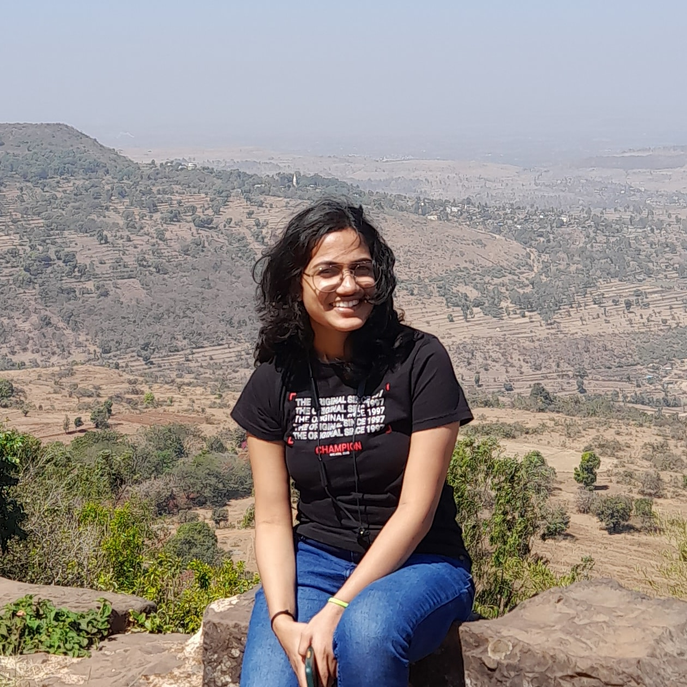

<!DOCTYPE html>
<html lang ="en"></html>
<head>

    <title>My Resume</title>
</head>
<body>
    <h1>Sparsha Sawant</h1>
    
    <br/>
    <a href="./contact.html">Contact Details</a>
    <br/>
    <a href="./about.html">About Me</a>
    <hr/>
    <h2>Objective</h3>
    <p>Enthusiastic learner exploring Full-Stack Web Development. This resume is a demonstration of my HTML skills as I progress in my web development journey.
    </p>
    <h3>Education</h3>
    <ul>
        <li>Degree: Bachelor's in Electronics and Communication Engineering</li>
        <li>Additional Studies: Self-studied Computer Science subjects for GATE CSE preparation</li>
        <li>Relevant Skills: Strong foundation in Data Structures, Algorithms, TOC, DBMS, Computer Networks, and more</li>
        <li>Current Learning: Full-Stack Web Development (HTML, CSS, JavaScript, etc.)</li>
    </ul>

    <h3>Work experience</h3>
    <p>Quality Analyst – Inbetween Software Solution</p>

    <h3>Skills</h3>
    <ul>
        <li>
            HTML, CSS (Basic)
        </li>
        <li>
            JavaScript (Learning)
        </li>
        <li>
            Full-Stack Web Development (In Progress)
        </li>
    </ul>
    <hr/>
    <footer>
        <small>
            Copyright © 2025 parsha sawant. All Rights Reserved.
          </small>
    </footer>

</body>